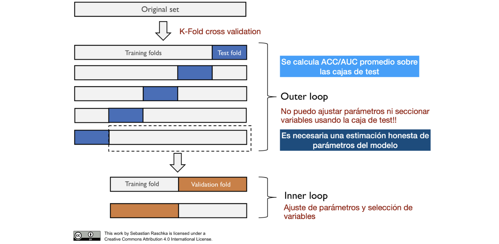

Algoritmos de Aprendizaje Computacional
1 Introducción
1.1 Objetivos
El principal objetivo de este estudio es obtener un modelo ajustado al conjunto de datos de Metástasis de Cáncer de Mama para poder realizar predicciones efectivas sobre el estado PCR de un paciente dada una serie de variables o características sobre este. Consecuentemente, nace de manera natural un segundo objetivo principal, y es el de la determinación de las características más importantes para la determinación del estado del paciente, es decir, la realización de una selección de características. Todo esto se realizará con la finalidad de poner un modelo en producción, el cual pueda ser usado a través de la interfaz RShiny para la predicción efectiva del estado PCR de un paciente de Cáncer de Mama.
Objetivos secundarios de este proyecto incluyen el estudio de la estabilidad en la selección de características a lo largo de los diferentes métodos y modelos aplicados. Se realizará también una exploración de la estabilidad de los hiperparámetros de un mismo modelo a lo largo de diferentes semillas aleatorias establecidas.
| Objetivo | Tipo |
|---|---|
| Obtener un modelo ajustado al conjunto de datos de Metástasis de Cáncer de Mama | Principal |
| Determinación de características más importantes en la predicción del estado PCR del paciente | Principal |
Poner un modelo en producción, accesible a través de la interfaz RShiny |
Principal |
| Estudiar la estabilidad en las características seleccionadas | Secundario |
| Explorar la estabilidad de los hiperparámetros de un mismo modelo a lo largo de diferentes semillas aleatorias establecidas. | Secundario |
1.2 Trabajos Previos
2 Metodología
A lo largo del desarrollo de este proyecto se han utilizado una serie de datos y se han seguido unas directrices ordenadas. Todo esto queda redactado en este apartado.
2.1 Material
2.2 Métodos
Todos los objetivos de este proyecto quedarían anulados si no se sigue una metodología estricta, basada en la estimación honesta de parámetros y la rigurosidad para la evaluación del rendimiento de los modelos mediante la selección de una métrica que sea capaz de cuantificar la capacidad predictiva del modelo independientemente del umbral seleccionado para clasificar las muestras -ya que este depende de las necesidades específicas del equipo sanitario. Esta sección sirve como guía para mostrar cuál ha sido esta metodología adoptada, y así demostrar su eficacia y seguridad.
2.2.1 AUC y Rendimiento Aparente
Para poder estimar el rendimiento cualitativo de un modelo, se necesita tanto una métrica cuantificable que refleje efectivamente su capacidad predictiva, como un valor base (ground truth) con el que comparar. En este estudio se ha decidido utilizar el AUC (Area Under the Curve) como métrica representativa del rendimiento de un modelo, porque es una medida independiente del umbral utilizado para clasificar probabilidades calculadas por el modelo, esto es una característica decisiva, ya que, como se comentó anteriormente, el umbral podrá ser decidido por el clínico cuando el modelo sea puesto en producción, para que se ajuste a sus necesidades. Al utilizar el AUC como medida, podremos dar una estimación independiente del umbral a los clínicos, indicando que, elijan el umbral que elijan, el modelo rendirá de una manera preestablecida.
Por otra parte, se ha apostado por tomar el rendimiento aparente del modelo como la métrica base de comparación para un mismo modelo. El rendimiento aparente se calcula mediante el entrenamiento y evaluación del modelo con todo el conjunto de datos, obteniendo una estimación optimista de la capacidad predictiva del modelo, al ser evaluado con los datos que fue entrenado. Una característica que debe quedar clara es la de que esta métrica solo servirá para comparar diferentes métodos de selección de variables, búsqueda de hiperparámetros, o ajuste fino, de un mismo modelo, no entre modelos. Para realizar una comparación entre modelos se hará uso de la estimación honesta de parámetros, es decir, la doble validación cruzada 5x2.
2.2.2 Ajuste Fino: Doble Validación Cruzada 5x2

El método de doble validación cruzada 5x2 es una técnica robusta para la evaluación de modelos que busca obtener una estimación honesta del rendimiento predictivo de un modelo. Este método se basa en una estructura jerárquica de validación cruzada, compuesta por dos niveles conocidos como inner loop y outer loop.
2.2.2.1 Outer Loop
El outer loop se encarga de la evaluación externa del modelo y se basa en la división del conjunto de datos original en 5 pliegues. En cada iteración, uno de estos pliegues se reserva como conjunto de test, mientras que los cuatro pliegues restantes se utilizan para el entrenamiento del modelo. Este proceso se repite cinco veces, de manera que cada pliegue se utiliza una vez como conjunto de test. Es crucial destacar que en el outer loop no se permite ajustar parámetros ni realizar selección de variables utilizando el conjunto de test, garantizando así una evaluación imparcial y honesta del modelo.
2.2.2.2 Inner Loop
Dentro de cada iteración del outer loop, se implementa el inner loop, cuyo objetivo es el ajuste fino de los hiperparámetros del modelo y la selección de las variables más relevantes. El inner loop utiliza una nueva división del conjunto de entrenamiento en pliegues adicionales. Generalmente, se opta por una validación cruzada más sencilla dentro de este bucle interno. Aquí, uno de los pliegues del conjunto de entrenamiento actúa como validación, mientras que los restantes se utilizan para el ajuste del modelo. Este proceso se repite varias veces para identificar la combinación óptima de hiperparámetros y características que maximicen el rendimiento predictivo en el conjunto de validación.
2.2.2.3 Evaluación Final
Una vez completado el ajuste en el inner loop, se evalúa el modelo ajustado en el conjunto de test reservado en el outer loop. Este enfoque jerárquico asegura que el ajuste de los hiperparámetros y la selección de variables no influyan en la evaluación final del rendimiento del modelo. El rendimiento se cuantifica mediante métricas como el AUC (Área Bajo la Curva), proporcionando una estimación promedio del rendimiento del modelo a lo largo de las iteraciones del outer loop. Este método de doble validación cruzada 5x2 ofrece una estimación más confiable y menos optimista del rendimiento del modelo, adecuada para su implementación en escenarios clínicos donde la precisión es crucial.
2.2.3 Selección de Características
La selección de características es un paso fundamental en la construcción de modelos predictivos, ya que permite identificar las variables más relevantes para el problema en cuestión. Este proceso no solo mejora la interpretabilidad del modelo, cosa que permite a los investigadores y clínicos entender mejor qué variables están influyendo en las predicciones del modelo, sino que también reduce significativamente el tiempo computacional y el riesgo de sobreajuste, proporcionando un modelo más eficiente y robusto.
2.2.3.1 Metodología de Selección de Características
En este estudio, se han realizado cuatro esquemas de selección de características por cada ciclo de doble validación cruzada 5x2 (2CV 5X2). Estos esquemas incluyen tanto métodos de filtrado, como métodos wrapped, y métodos embedded, proporcionando una perspectiva completa sobre las variables más relevantes.
Todas las Variables del Conjunto: En este enfoque, se entrena el modelo utilizando todas las variables disponibles en el conjunto de datos, sin realizar ningún tipo de selección previa. Esto sirve como una línea base para comparar la efectividad de los métodos de selección de características.
Métodos de Filtrado: Análisis de Asociación: Este método de filtrado se basa en el análisis de asociación, donde se evalúa la relación individual de cada variable con la variable objetivo. Se seleccionan aquellas variables que muestran una fuerte asociación, lo que permite reducir el conjunto de características antes del entrenamiento del modelo.
Métodos Wrapped: StepAUC Backwards: En este método, se comienza con todas las variables incluidas en el modelo. Durante el proceso de entrenamiento en el inner loop, se prueban eliminando variables una por una. Si la eliminación de una variable mejora el AUC (Área Bajo la Curva), la variable se elimina permanentemente del conjunto. Este proceso se repite hasta que la eliminación de más variables no resulta en una mejora del AUC, determinando así el conjunto final de características seleccionadas.
Métodos de Embedded: Modelo Lasso: El modelo Lasso es un método de regularización que no solo ajusta el modelo, sino que también selecciona automáticamente las variables más importantes. Durante el inner loop, se ajusta un modelo Lasso y se seleccionan las variables con coeficientes diferentes de cero.